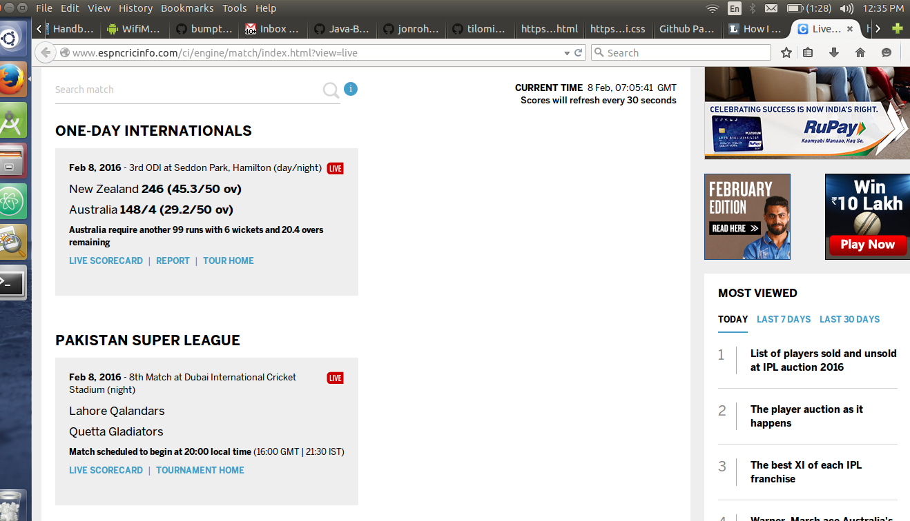
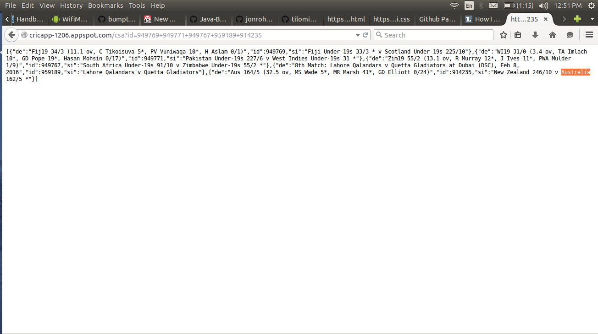
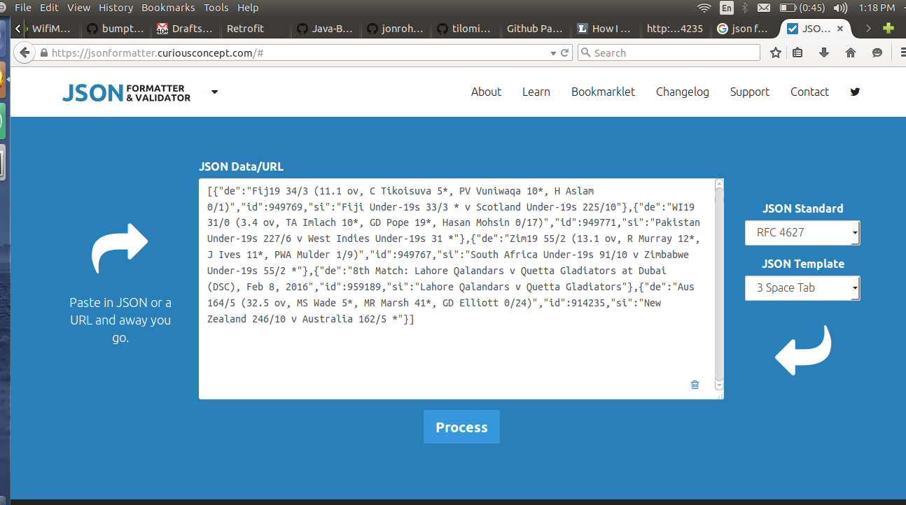
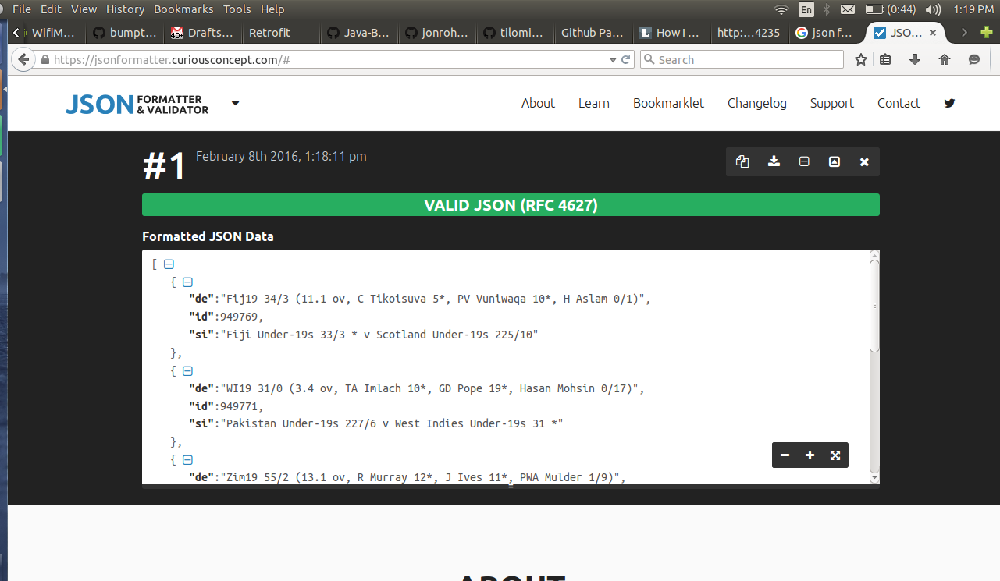

A master explaining rest to his student?
Rest is the basic building bock of entire web (literally!!).
Mater:Think about when you're browsing around cricinfo.com looking for latest cricket scores. Imagine each of the matches as being nouns. Now, if they were available in a representation that a machine could understand, you could do a lot of neat things.
Student: Master, why can't a machine understand a normal web page?
Mater:Because web pages are designed to be understood by people. A machine doesn't care about layout and styling. Machines basically just need the data. Ideally, every URL would have a human readable and a machine readable representation. When a machine GETs the resource, it will ask for the machine readable one. When a browser GETs a resource for a human, it will ask for the human readable one.
Student: What is then machine understand?
Mater:Ah, great question!!. Machine understands some kind of formatted text. One such format (and probably the most popular) is json. As I said previously it is the most important building block of the entire web. It can be easily generated (by converting objects to string through a process called serialization) and consumed by machines (by converting string into objects through deserialization).
Note the url - http://cricapp-1206.appspot.com/csa?id=949769+949771+949767+959189+914235 we will be using it later to read it from Java. The numbers with id are the match ids and will change http://cricapp-1206.appspot.com/csa to get the latest match ids.
Student: Ok, So I got it that it can be generated easily by machine? A final question, Who generates the format for browser?
Mater: Well, machines are the one who generate the content for browser. They can generate that content but unable to consume it. See, I told you how important is rest.
Student: Thank you for enlightening me!!
How I explained rest to my wife?Rest client(consumer) in Java using retrofit
To all Java Devs, Retrofit makes writing rest api easy like eating peanuts.
Install Eclipse! And install maven plugin.
Create an empty maven project and add the following dependency in pom.xml:
com.squareup.retrofit
retrofit
1.9.0
Find the model of incoming data. Let's put the json in previous section through a formatter.
Raw data:
Formatted data:
We can see it list of objects with each object contains de, which is the detailed match score. id, the match id, and si the match summary.
Retrofit turns your REST API into a Java interface. Let's recall the url - http://cricapp-1206.appspot.com/csa?id=949769+949771+949767+959189+914235 from previous section. We will be dividing into - http://cricapp-1206.appspot.com (base url) shared by all api on this server + "/csa" - path + "?id=949769+949771+949767+959189+914235" - query.
public interface MatchService {
@GET("/csa") // This is the path url for rest api. It generates - /csa?id=949769+949771+949767+959189+914235
List listmatches(@Query("id") String id);
}
public class Match {
// These are the exact object names from formatted data.
String de;
String id;
String si;
}
The RestAdapter class generates an implementation of the MatchService interface.
RestAdapter restAdapter = new RestAdapter.Builder()
.setEndpoint("http://cricapp-1206.appspot.com") // This is the base url.
.build();
MatchService service = restAdapter.create(MatchService.class);
Now called the interface from main.
public static void main(String[] args) {
// todo - Get the match service - keep it in singleton. Replace the string with latest ids from http://cricapp-1206.appspot.com/csa
List matches = service.listmatches("949769+949771+949767+959189+914235");
System.out.println(matches);
}
Mission Accomplished!!
Congrats you have successfully written your first rest client. Go get yourself a beer!! You are a web ninja.